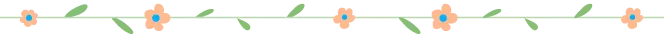
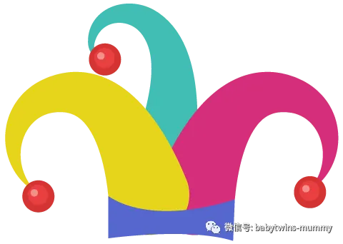
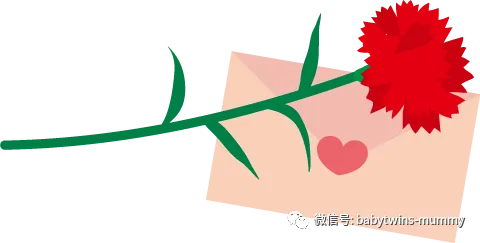
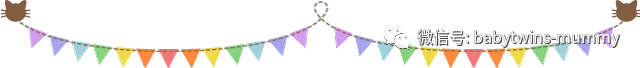

点击蓝字
关注我们
文|圆圈妈
这几天大家的朋友圈应该都被《疫苗之王》刷屏了吧。作为两个孩子的妈妈，我也不例外，时刻关注着这起事件的最新动态。
听说涉事单位被罚款330万！我在想，330万是个什么概念，连深圳郊区的一套房子都买不起。我们祖国的花朵就如此不受待见吗？
长生生物只是一个缩影，也许哪天又冒出一个爆炸性新闻说其他公司也有造假。
我不是育儿达人也不是医学大咖，关于疫苗，我更不敢妄加评论。但是我是两个孩子的母亲， 我的两个双胞胎儿子，三岁前的计划内疫苗已经全部接种过了，我非常想表达我此刻的无奈，疑虑和恐慌！
1
我想起5月份圆圆正好补打了一针百白破，而这一针百白破本应在他一岁半的时候接种的，因为高热惊厥史推迟了！
我和圆圈爸拿着疫苗本研究了很久，无果！你懂的，医生的鸡肠字，我们压根没看出个啥，之前接种疫苗都有把医生开具的疫苗单子拍照，恰恰这次忘记拍照留底了。
我们又检查了下圆圈3岁前接种的其他疫苗，依然无果！我们心里都很清楚，就算查到中招了又能怎样呢？
去讨说法吗？找谁讨呢？
去补打吗？只是补打百白破吗？
补打会有风险？
其他疫苗呢？也会有问题吗？
我是否要告诉圆圈，他们三岁前打的疫苗都要再来一遍吗？
2
一直以来，我都非常重视圆圈的疫苗，几乎每次我都要亲力亲为，哪怕请假扣工资都无所谓。因为总是担心圆圈爷爷奶奶并不知晓接种疫苗的注意事项， 或者在知晓的情况下依然怀着侥幸心理，本应该在接种后在半小时之内留在接种处观察的，却因为各种事情提前离开社康。
每次他们接种完之后我就很疑神疑鬼地盯着他们看，好像我很期待他们会出现接种后的不良反应似的！
果然，当妈的每个都是神经病。
我是神经病double！
我只有一次缺席圆圈的疫苗接种，那就是他们哥俩出生那会儿！
圆圈兄弟刚生下来就被新生儿科医生抱走了。虽然评分都是10分，体重也有5斤以上，但是按照双胎37周的足月论，圆圈兄弟属于早产儿，依然要被接入新生儿科观察。
当时我还在病床上无法动弹，总是不忘叮嘱圆圈爸去新生儿科探视的时候，千万要记住提醒医生，生怕医生太忙了把圆圈的疫苗给漏掉了。
因为圆圈早产儿，卡介苗是在他们出生后满37周，在留医部的新生儿科接种的。
3
圆圈满月后，我们就去了五和社康接种第二针的乙肝疫苗。
这是我第一次带圆圈去打疫苗，也是第一次看到圆圈被扎针，虽然我知道圆圈在新生儿科已经经历过好几轮的扎针采血了，看看那脑门前那被剃掉的一小撮头发就知道他们在里面遭了多少罪了。
幸好，我没有亲临现场，不然我一定跟医生拼命！
现在我终于有机会看到圆圈被扎针了，我却如缩头乌龟一样躲在角落里没勇气看，只好让圆圈奶奶接受这一光荣艰巨的任务。
因为圆圈的大名非常相像，一个 “政”一个“致”，稍微眼花下，就会以为是同一人。因为这个名字的问题，我已经惨遭好多护士小姐姐的投诉N次了。而我自己也“深受其害”，经常要拿着两个本子核对好几遍，也让其他人核对一遍，生怕弄错，确认无误才抱进去给护士接种。
有时候护士也怕弄错，跟我们再三确认，我心里又没底了，只好又重新把他们的脸放在一起核对一遍。
4
疫苗的事件已经不是第一次，几乎每年都会爆炸出很多类似的疫苗新闻，不管是以前还是现在，让我们这些当家长的每次给孩子打疫苗的时候都很纠结，但又不得不打。
因此，每次接种前我都会仔细阅读疫苗本上相关疫苗的注意事项，如果他们中的谁有身体不适，比如圆圆有点流鼻涕，圈圈没有症状，或者带去社康问医生，把孩子的情况反馈下，只要医生说个“不”字，我都会严格按照医生的指令地把圆圈都抱回去等到他们身体状况均OK 才一起带去接种，
就凭我这种记性，实在不敢拿圆圈的健康大事去挑战我那“已被同龄人抛弃”的记忆力。
每次在接种疫苗的时候，我都会把医生开具的疫苗单子拍照存底，我好像做好了准备似的。 就好像我每次出门上班，我都会很郑重地跟圆圈说拜拜，然后很深情地看他们一眼，或者狠狠地抱一抱他们。
因为担心路上出啥意外，再也没有机会看到他们了。
但我希望我永远也用不上这些存底！
5
关于自费疫苗，圆圈都是按照国家计划内的免费疫苗接种的，有儿科医生的朋友也建议我们，
反正免费的都接种，自费的可以不打！
如果真要自费打，那也要选国产的，当时朋友戏谑地说”国外的月亮不一定圆。”
我不知道啥意思，反正我只给圆圈接种过一针自费疫苗，国产的水痘疫苗！
我想了下，同时护理两个发高烧长水痘的两个熊孩子，“臣妾做不到”
因此，圆圈到了水痘疫苗的接种年龄，我就火速带着他们去接种了！
如果非要我投票哪个疫苗必须是真的，那除了乙肝疫苗之外。
水痘疫苗，求求你，也必须是真的！
结语
我想起小时候好像很少打疫苗，也不像现在那样几乎每个小孩子都有一本疫苗本且跟出生证一样重要，入托入园入学必备。非常庆幸那些低概率或者高概率的大病小病都没有缠上幼年时的我，让我顺利成年并结婚生子。
突然发现我能长大成人，且无病无痛是件多么难能可贵的事情。
同时，我也非常感恩，圆圈的健康成长有那么多免费疫苗保驾护航，即使现在陆续曝光出这么多匪夷所思，令人发指的疫苗事件。
疫苗对人类的保护作用是毋庸置疑的，我依然非常认同疫苗的重要性。
希望国家尽快制定相应的法律严惩那些造假企业，希望各相关部门秉公职守严格执法，希望各社康中心严把疫苗质量关。
作者|圆圈妈
资深屌丝女+腐女一枚
家有孖仔男宝两枚+IT男人一枚
微信：孖仔帮babytwins-mummy
博客：孖仔帮www.sgguy.com
如需入双胞胎妈妈交流群
请＋圆圈妈的微信号！
点击“阅读原文”可直接进入博客网站






